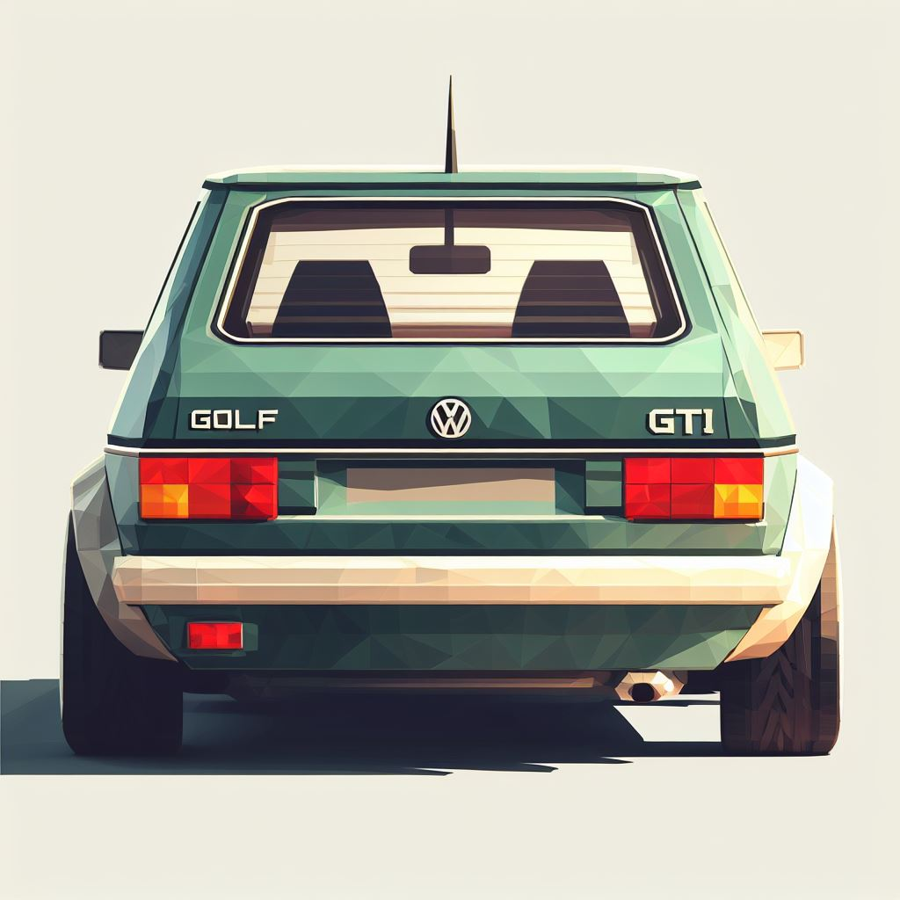

Volkswagen GOLF GTI
Era un pueblecito rayano, Ribamoura, vivero de contrabandistas, donde esta profesión de riesgo y
lucro hacía a la gente menos dormida de lo que suelen ser los pueblerinos. Abundaban los mozos de
cabeza caliente, y se desdeñaba al que no era capaz de coger una escopeta y salir a la ganancia.
Las mujeres, vestidas y adornadas con lo que da de sí el contrabando, lucían pendientes de ostentosa
filigrana, patenas fastuosas, pañuelos de seda de colorines; en las casas no faltaba ron jamaiqueño
